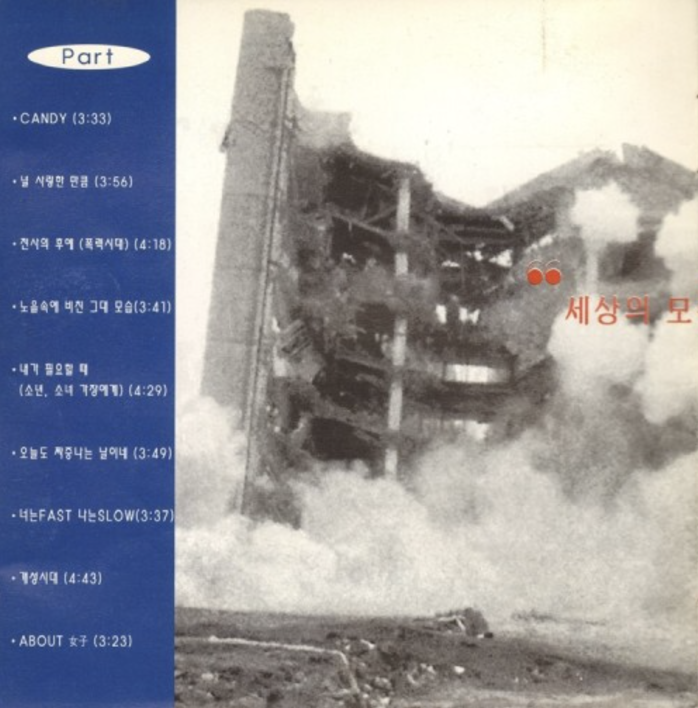
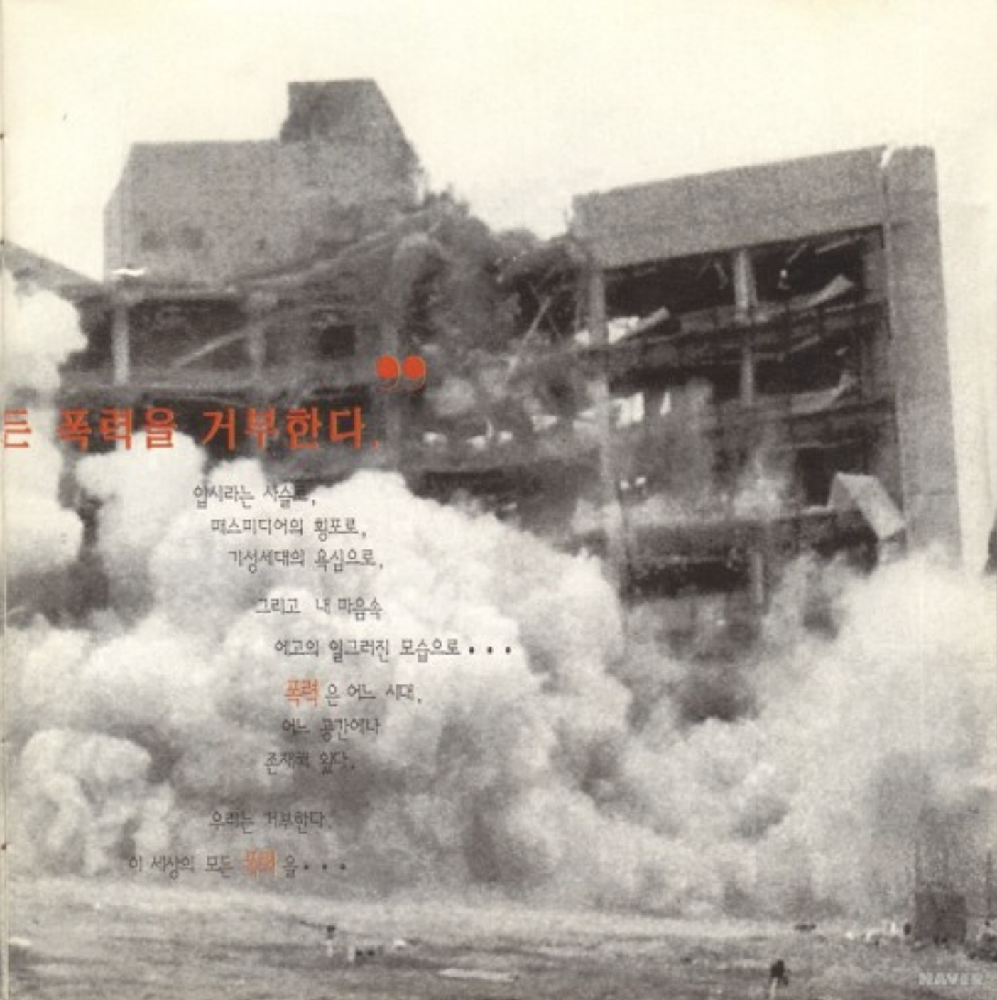
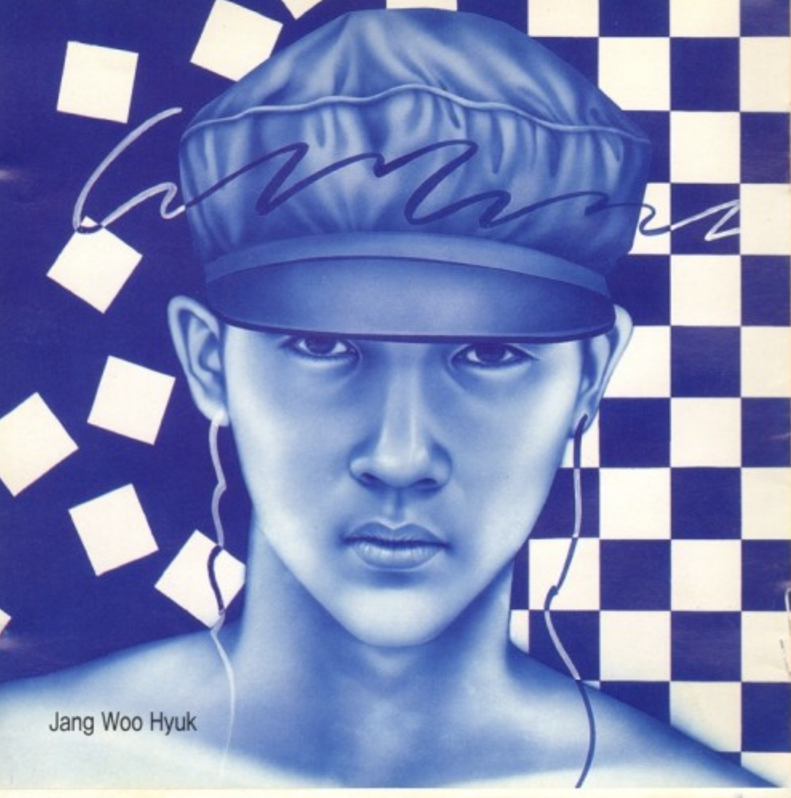
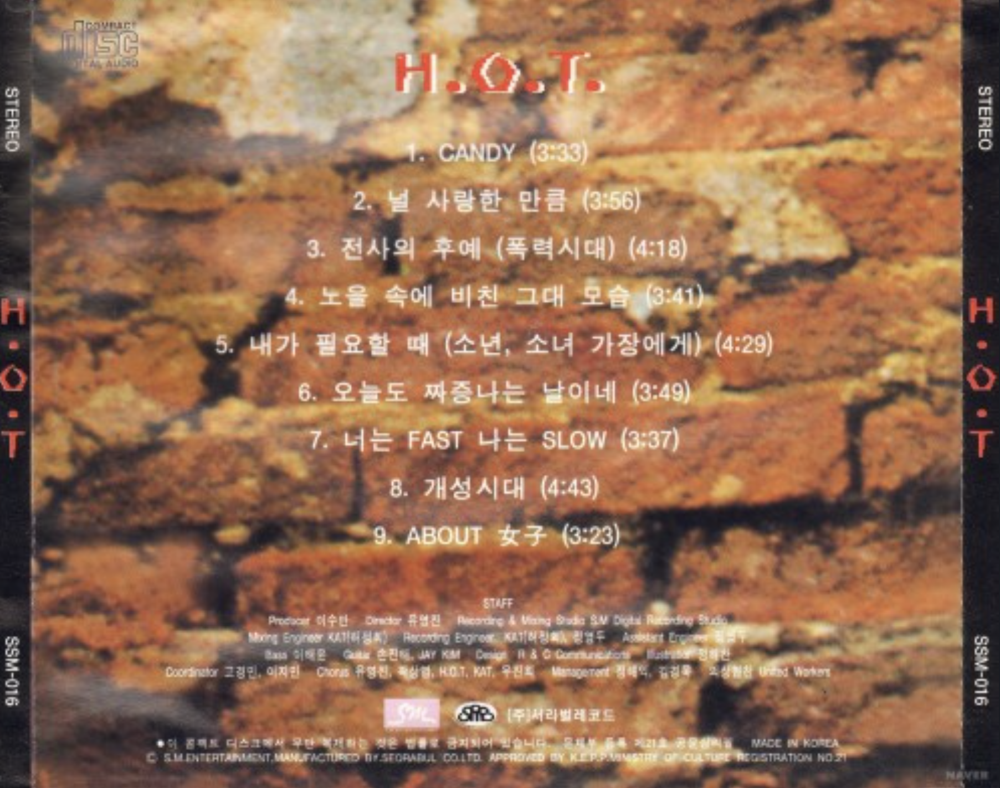
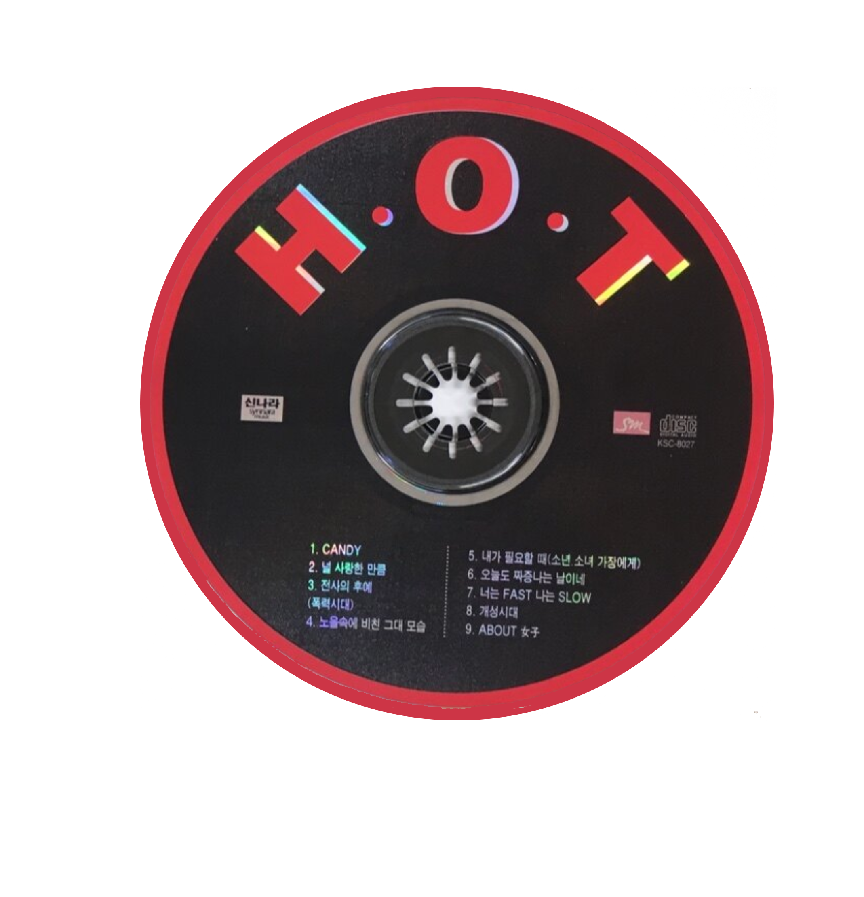

we hate all kinds of violence
<1996>
가수 소개
SM엔터테인먼트가 기획한 5인조 아이돌 그룹으로, 10대 중심 가요 시장의 흐름을 이끌며 한국 아이돌 문화의 기초를 마련했다. 데뷔곡 <전사의 후예>와 히트곡 <캔디>, <빛>, <행복> 등으로 큰 사랑을 받았으며, 오늘날 K-POP 아이돌 시스템의 원형을 제시한 그룹으로 평가받는다.
앨범소개
10대 중심의 대중가요계를 주도한 H.O.T.의 첫 앨범이다. 등장과 함께 차트 1위를 하고 연말 가요대상 시상식에서 대상을 받는 등 큰 성공을 거두었다. H.O.T.의 등장은 가요 시장의 변화와 함께 아이돌 그룹 및 케이팝을 대변하는 상징이 되었다.
🎵




